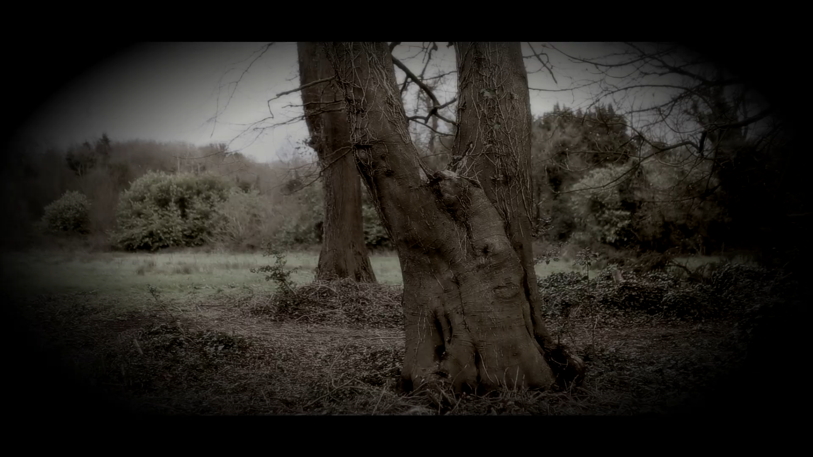

Something in the Sand
2026 • Short Film • 4 mins
After discovering a silver comb washed ashore in the wake of a violent storm, a teenage girl unknowingly steals from a banshee—unleashing a relentless pursuit along the coast as the vengeful spirit seeks to reclaim its relic.
Written, edited, and directed by Ben Wallace
Starring Ellie Wallace
